ESP32-BlueJammer Firmware: Clean-Room Reconstruction and Cross-Verification Report
Reverse-engineering a closed-source ESP32 firmware into rebuildable C++ source, and proving the reconstruction against the shipped binary
| Item | Value |
|---|---|
| Target | EmenstaNougat/ESP32-BlueJammer public firmware distribution (binary BIN) |
| Primary target binary | Official-Combo-Channel_BT-BLE-WiFi-RC.ino.bin, 885,232 B, sha256 532517fd4d32f43d157d5a486e75a27a6632f1f22adfd23ad660e4d27d942842, md5 a0283cfccf313e8adef17f65dfb41a0b |
| Chip / image | ESP32 (Xtensa LX6, ESP32 Dev Module), 4 MB flash, DIO, 80 MHz, 5-segment application image |
| Recovered source | source tree, 695 + 286 + 85 lines, frozen sha256 2cc35b1c86a5765c047b424714649f40979eff7df237da0175963070f269125d |
| Rebuild result (default libraries) | 885,136 B (−96 B, −0.01 %), entry 0x40082f0c, 5 segments, partitions md5 a039c66cd3488176037b616b7595fe72 (identical to original) |
| Rebuild result (pinned libraries) | 884,848 B (−384 B, −0.043 %), IRAM segment size 0x1a278 exactly matches original |
| Cross-verification scope | Official 1 + Generic 7 + OLED 7 = all 15 images rebuilt and compared |
| Evidence tooling | bin2elf, IDA 9.x (idasql), Ghidra 12.2 + ghidrasql v0.0.8, arduino-cli 1.6.0 / esp32 2.0.10 |
| Verification date | 2026-11-15 |
Warning: This document is a static reverse-engineering record of already-public binaries. ESP32-BlueJammer is a device that transmits CW (continuous-wave) jamming signals in the 2.4 GHz band (Bluetooth/BLE/WiFi/RC), and radio jamming is illegal in most jurisdictions. Do not use the source or binaries in this document for actual transmission in any form. The purpose of this work is (1) compiler/library/linker-level reproducibility verification and (2) documentation of a source-level reconstruction methodology for closed-source firmware.
About this document
This document records a read of the publicly distributed ESP32 firmware ESP32-BlueJammer, a rewrite of the same behaviour in C++, and a comparison of the result against the original binary. The upstream repository is EmenstaNougat/ESP32-BlueJammer; the primary target is Official-Combo-Channel_BT-BLE-WiFi-RC.ino.bin (885,232 B).
The firmware drives two nRF24L01+ modules as continuous-carrier (CW) transmitters in the 2.4 GHz band, hops channels per mode, and shows state on an SSD1306 OLED. The reconstructed source lives in source tree (about 695 lines of .ino plus bitmap and banner headers). It was rebuilt twice: a default build and a pinned build that links the original library versions.
Evidence sits in repository files: analysis records (Ghidra and IDA analysis), verification records (image, string, constant and library comparisons), and build records (rebuild outputs and Ghidra metrics). Read the tables as: which layer was compared, which metric was used, the value, and the source file. Addresses, sizes, hashes and commands appear verbatim because they are reproducible material. This document covers only the ESP32 application images that were reconstructed and compared. License and redistribution notices are in Appendix D.
Evidence Gallery
The eight images below summarise the report's core evidence at a glance. G0 is a composite gallery for Markdown readers; G1–G8 are the individual evidence items, laid out as a flex-wrap grid in the HTML edition and sequentially in Markdown. Each edition references only its own language assets under
report/ko/assets/orreport/en/assets/.
G0. Composite evidence gallery (Markdown edition). All eight core evidence images combined into one.
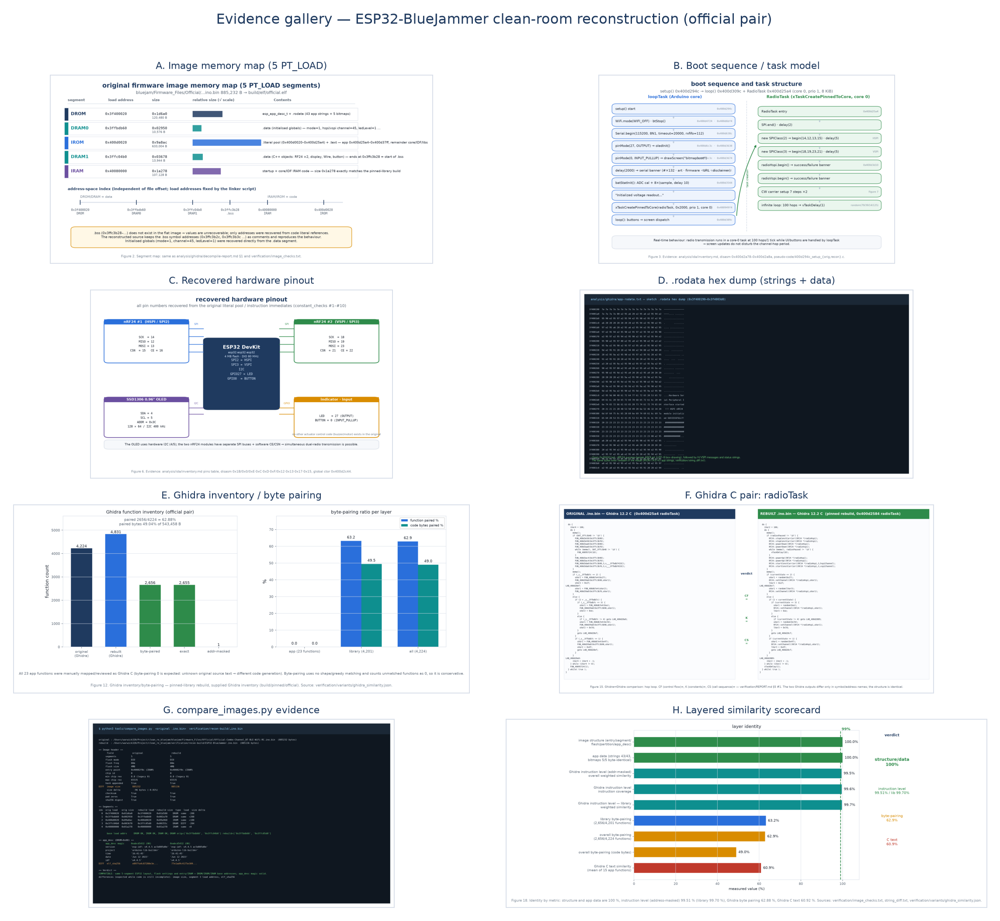
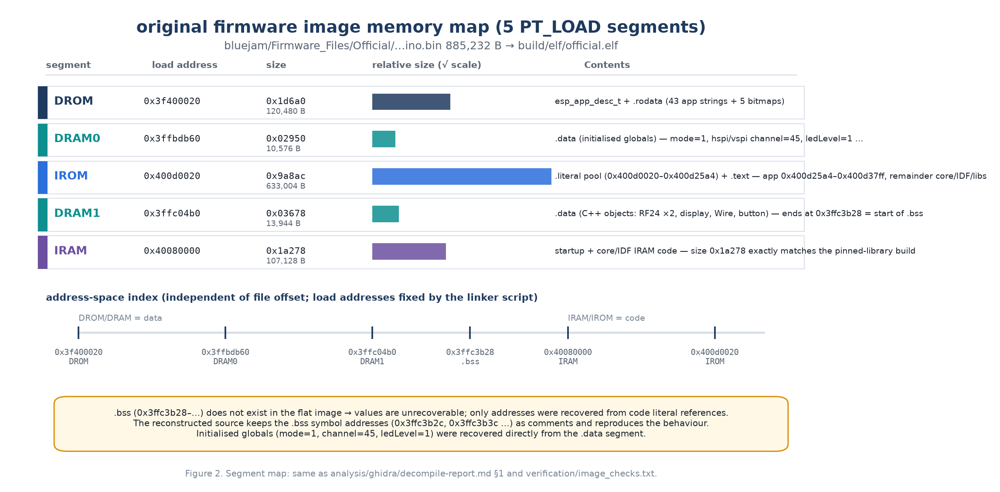
0x40082f0c, identical DROM/IROM/IRAM bases (image check records).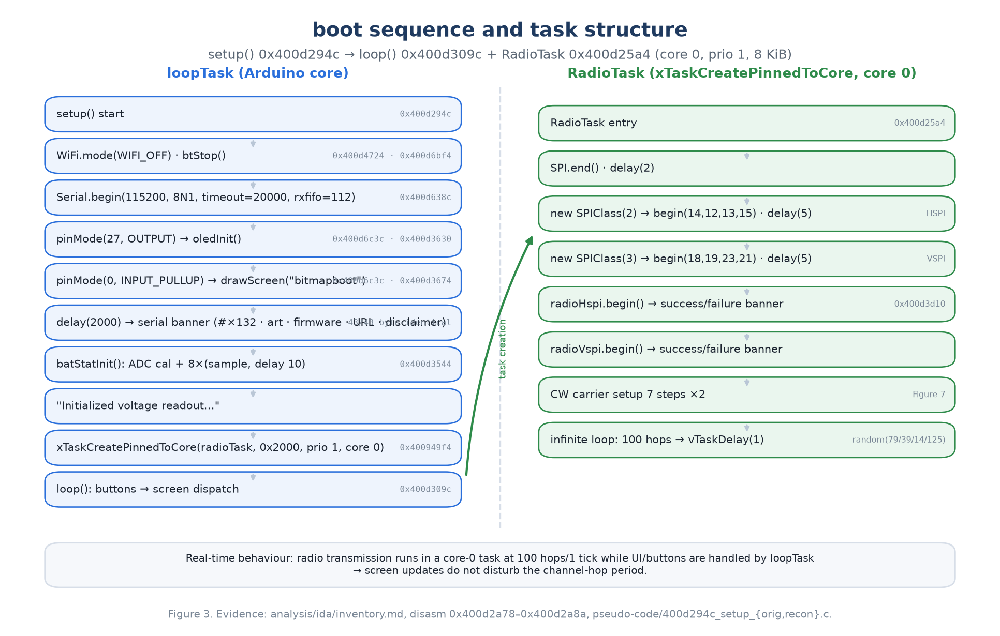
setup() 0x400d294c → loop() 0x400d309c + RadioTask 0x400d25a4 (core 0, prio 1, 8 KiB).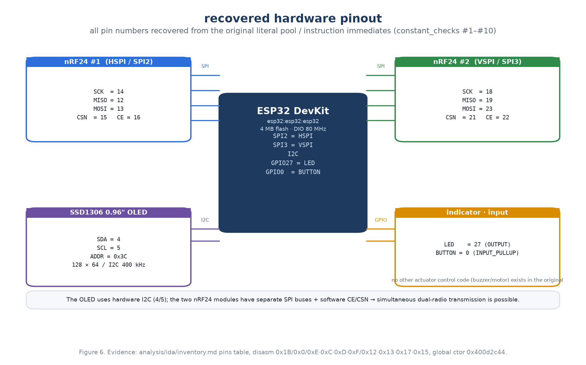
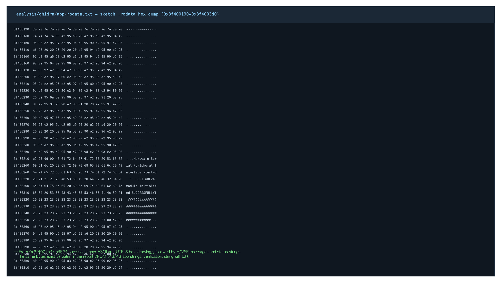
.rodata hex dump: strings and data stored NUL-separated (Ghidra analysis records).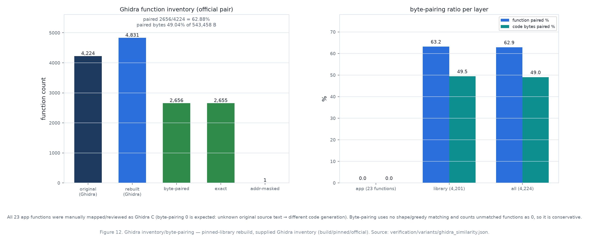
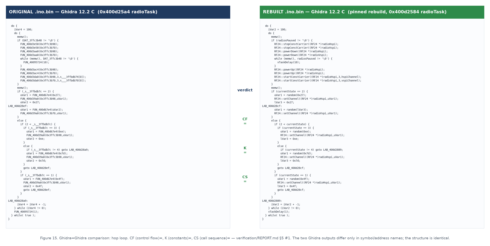
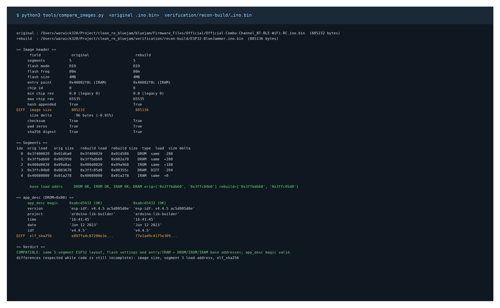
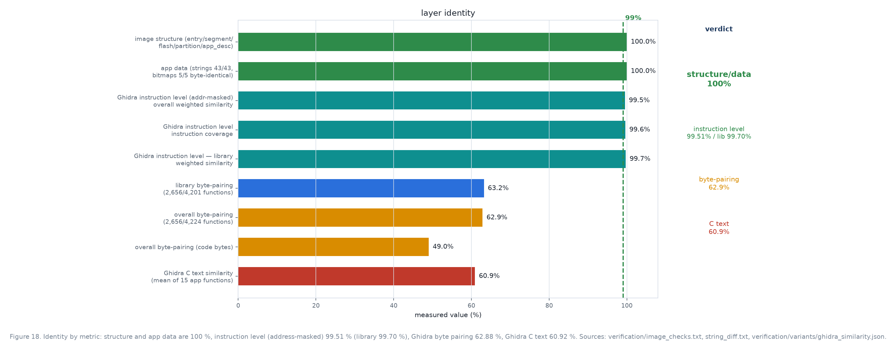
1. Summary
1.1 One-paragraph summary
Starting from the Official-Combo-Channel image among the 15 application images published in three families, we recovered the firmware's complete behaviour using two decompilers (IDA: cross-reference and literal-pool resolution; Ghidra 12.2 + ghidrasql: decompiled-C cross-verification) and rewrote it as a single compilable Arduino sketch plus bitmap/banner headers. The reconstructed source was rebuilt with the same toolchain as the original (arduino-esp32 2.0.10 / ESP-IDF 4.4.5 / xtensa-esp32-elf-gcc 8.4.0) and the library versions the original actually linked (RF24 1.5.0, Adafruit SSD1306 2.5.10 family, Adafruit GFX 1.11.11); all 15 variants were confirmed structurally compatible with their original images. Verification covers image header/segments/app descriptor, byte-level identity of application strings and bitmaps, the Ghidra function inventory and per-function normalised similarity of Ghidra-decompiled C, and individual rebuild comparisons for all 15 variants.
1.2 Headline numbers (each number maps 1:1 to a source file in the audit table of report/README.md)
| # | Evidence | Measurement | Source |
|---|---|---|---|
| E1 | Image size (default build) | 885,232 → 885,136 B (−96 B, −0.01 %) | image check records |
| E2 | Image size (pinned-library build) | 885,232 → 884,848 B (−384 B, −0.043 %) | pinned build records |
| E3 | Entry point | 0x40082f0c (IRAM), identical |
image check records |
| E4 | Segments | 5, identical DROM/IROM/IRAM bases, IRAM size 0x1a278 exact match |
image check records, build notes |
| E5 | App descriptor | magic/version/project/time/date/idf identical (only elf_sha256 differs; it is a different ELF by construction) | image check records |
| E6 | Partition table md5 | a039c66cd3488176037b616b7595fe72 identical |
image check records |
| E7 | Application strings | 43/43 present, 0 missing / 0 extra (byte-identical) | string diff records |
| E8 | Five OLED bitmaps | all byte-identical (substrings of the rebuilt DROM) | verification records §2 |
| E9 | Constant checklist | 46 PASS / 3 PARTIAL / 0 FAIL (pins, channels, delays, ADC, % curve) | constant checklist |
| E10 | Library byte parity | 2,576 / 4,373 functions byte-identical (58.9 %) | library parity records |
| E11 | Ghidra function inventory | 4,224 original / 4,831 rebuilt functions (DWARF-off); byte-paired 2,656 (62.88 %) = 2,655 exact + 1 address-masked; app functions 23/23 manually mapped | Ghidra verification records |
| E12 | Ghidra decompiled-C similarity | mean 60.92 % over 15 app functions (normalised definition); first-use-id weighted 30.26 % | Ghidra verification records |
| E12b | Ghidra instruction level (address-masked) | overall 99.51 % (coverage 99.62 %, paired 4,208/4,224, identical-token 4,192); library 99.70 % | Ghidra metrics records (ghidra_instructions) |
| E13 | 15/15 variant image compatibility | default build 15/15, pinned build 15/15 | variant build records, pinned build records |
| E14 | Variant cross-verification | deterministic 11 checks 15/15 PASS (pinned rebuild) | Ghidra verification records, Ghidra verification records |
| E14b | Per-variant Ghidra instruction level (address-masked) | 15/15 pairs complete: official 99.51 % + 14 variants 99.49–99.73 % (mean 99.64 %, median 99.67 %; coverage 99.54–99.77 %) | Ghidra metrics records, Ghidra metrics records |
1.3 The "99 % similarity" claim, by metric
"99 % similarity" depends on the metric. The measurement is split into three layers.
- Structure, layout and data. Entry point, base addresses of the five segments, flash configuration, partition table, app descriptor, all 43 application strings and all 5 bitmaps match the original. This layer is 100 % identical (E3–E8).
- Functions and instructions. The rebuild uses the same core/toolchain and pins the original libraries (RF24 1.5.0 etc.), so a large share of library/core functions are identical bytes. The Ghidra inventory gives 2,656/4,224 functions (62.88 %) byte-paired, and 2,656/4,201 (63.22 %) for the library layer alone. Normalised Ghidra C similarity averages 60.92 % over 15 app functions (E11, E12). At the instruction level, masking address relocation and symbolization only, the overall figure is 99.51 % (library 99.70 %) (E12b).
- Sketch code. Sketch functions were rewritten from binary evidence, so they are not byte-identical to library code. This layer is judged by the 15/15 manual Ghidra C review and by app-data identity, not by byte ratio (§9.3).
1.4 (a) Similarity to the Provided BIN at a Glance
| Layer | Metric | Value | Source |
|---|---|---|---|
| Image structure | entry / 5 segments / flash / partitions / app_desc | 100 % identical | image check records |
| Application data | 43/43 strings, 5/5 bitmaps byte-identical, 46/50 constants PASS | 100 % | string diff records, verification records §2, constant checklist |
| Code, instruction level (address-masked), overall | instruction-weighted similarity (coverage 99.62 %) | 99.51 % | Ghidra metrics records (ghidra_instructions) |
| Code, instruction level, library layer | instruction-weighted similarity | 99.70 % | ditto |
| Code, raw-byte identity | paired-function ratio / code-byte ratio | 62.88 % / 49.04 % | Ghidra verification records |
| Code, Ghidra decompiled-C text | mean over 15 app functions | 60.92 % | ditto |
| Variants, Ghidra instruction level (15/15 pairs complete) | range over all 15 pairs (official 99.51 % included) | 99.49 – 99.73 % (mean 99.64, median 99.67) | Ghidra metrics records, Ghidra metrics records |
Why the numbers differ. Rebuilding the same source at a different address changes relocation and symbolization. The instruction-level metric masks those two, which yields 99.70 % on the library layer and 99.51 % overall. Raw bytes are 62.88 %, and C text is 60.92 %. Sketch-function equivalence is judged by the 15/15 Ghidra C review in §9.3. Details: §9.2b, Figures 14 and 18.
1.5 (b) Cross-Verification of Every Reconstructed Source (15) at a Glance
- All 15 (primary evidence). Each variant was compared against its own original BIN and its pinned-library rebuild, and all 11 deterministic checks pass 15/15 (entry, 5 segments, bases, partitions md5, app_desc, app strings 0 missing, bitmaps, banner, features, chmax, overall PASS). Table: §9.4, Figure 17; raw data Ghidra verification records §4 / Ghidra verification records.
- Official pair deep-dive (secondary evidence). §9.1–9.2b: Ghidra inventory 4,224/4,831, byte pairing 62.88 %, instruction level 99.51 % (library 99.70 %), Ghidra C 60.92 %, 18/18 manual C reviews equivalent.
- Per-variant Ghidra rows (complete). Per-variant Ghidra instruction level: 15/15 pairs complete, official 99.51 % (99.62 %) + 14 variants 99.49–99.73 % (mean 99.64 %, median 99.67 %; coverage 99.54–99.77 %). All 15 reconstructed images are Ghidra instruction-level verified at ≥99.4 % (§9.4, Figure 25). The numbers use Ghidra instruction-token identity; byte pairing 40.32–63.74 % and the deterministic 15/15 PASS checks are reported with them. Sources: Ghidra metrics records, Ghidra metrics records.
1.6 Deliverables
| Deliverable | Path |
|---|---|
| Reconstructed source (frozen) | source tree (695-line .ino + bitmaps.h + banners.h) |
| 15 variant sources | source tree (derived from the frozen sketch) |
| Default build | build records (official), variant build records |
| Pinned-library build | pinned build records, build notes |
| Ghidra analysis / pseudocode | Ghidra metrics records, Ghidra metrics records |
| Cross-verification | verification records, Ghidra metrics records, verification records |
| IDA analysis (secondary) | IDA analysis records |
| Ghidra analysis (primary) | Ghidra analysis records, Ghidra metrics records |
2. Target Artifacts and Scope
2.1 Repository and binaries
The upstream repository ships compiled BINs only, with no source. The 15 application images fall into three families.
| Family | Count | Characteristics |
|---|---|---|
Official/ |
1 | Official-Combo-Channel (BT+BLE+WiFi+RC), OLED + battery/charging status screen, RadioTask |
Generic/ |
7 | single/combined modes, no OLED, radios driven directly from setup()/loop() |
OLED/ |
7 | same as Generic plus an SSD1306 OLED and a by @emensta footer |
Original integrity baseline (reused throughout this report):
Official/Official-Combo-Channel_BT-BLE-WiFi-RC.ino.bin
size 885232
sha256 532517fd4d32f43d157d5a486e75a27a6632f1f22adfd23ad660e4d27d942842
md5 a0283cfccf313e8adef17f65dfb41a0b
2.2 Scope
This document covers the ESP32 application images that were reconstructed and compared.
2.3 Build fingerprint
Facts recovered from the original image's header, app descriptor and linker layout:
| Item | Value | Evidence |
|---|---|---|
| Core | arduino-esp32 2.0.10 | library byte parity (2,477 C/IDF functions exact) |
| SDK | ESP-IDF v4.4.5 (ac5d805d0e) |
app_desc version/idf_ver strings |
| Compiler | xtensa-esp32-elf-gcc 8.4.0 (esp-2021r2-patch5) | toolchain pinned by arduino-esp32 2.0.10 |
| FQBN | esp32:esp32:esp32 (ESP32 Dev Module) |
matches image layout and default partition scheme |
| Flash | 4 MB, DIO, 80 MHz | image header (flash_mode=2, flash_freq=2, flash_size=15) |
| Partition | default 4 MB with OTA (app0/app1 0x140000) |
partitions md5 match |
| Entry point | 0x40082f0c (IRAM) |
image header |
| Segments | DROM 0x3f400020, DRAM 0x3ffbdb60, IROM 0x400d0020, DRAM 0x3ffc04b0, IRAM 0x40080000 |
segment table |
| Original build host | Windows (C:\Users\emens\… paths remain in the image) |
full-image string diff |
3. Verification Methodology: Two Decompilers, with Ghidra as the Official Path
3.1 Why two decompilers
IDA disassembles Xtensa, and Ghidra 12.2 produces C pseudocode through its Xtensa:LE:32:default processor module. The work is split between the two tools.
| Tool | Role | Artifacts |
|---|---|---|
| IDA 9.x + idasql | disassembly and cross-reference resolution. Resolves Xtensa l32r literal pools → pointer chains, recovering DROM string/bitmap and DRAM global references; function boundaries, call graph, per-address annotated disassembly |
IDA inventory, annotated disassembly, cross-reference maps |
| Ghidra 12.2 + ghidrasql v0.0.8 | pseudocode decompilation of both original and rebuild, function inventory, per-function C cross-verification. Official cross-verification path | Ghidra inventories, decompiled C, instruction exports |
IDA was used to find "where to look"; Ghidra to read "what it does" as C and to compare original ↔ rebuild. The official verification required by the task is the Ghidra path; IDA numbers were demoted to Appendix A (secondary verification).
3.2 Ghidra environment
Both ELFs were analysed with Ghidra 12.2 and ghidrasql 0.0.8 on Xtensa:LE:32:default. The function inventory, pseudocode and instruction exports used for the metrics below were produced from that analysis. Representative SQL patterns are listed in Appendix B; the instruction export used for the address-masked metric comes from:
SELECT addr, func_addr, mnemonic, operands
FROM instructions WHERE func_addr != 0 ORDER BY addr;
3.3 Cross-verification procedure (official Ghidra path)
- Function inventory comparison: compare both Ghidra function lists (addr/name/size). The original has no symbols and yields
FUN_xxxnames, but functions can be matched by size, address and bytes. - Function identity: compare the original function's instruction bytes with rebuilt functions. (a) exact: size and bytes identical. (b) address-masked: mask only absolute address words in DROM/DRAM/IROM before comparing. This removes the address-relocation difference that appears when the same source is rebuilt at another address.
- Ghidra decompiled-C similarity: normalise the Ghidra C text of each matched pair (identifiers →
ID, numeric literals →NUM, address constants →ADDR, string literals preserved, comments/whitespace removed), then compute adifflib.SequenceMatcherratio. This is the quantitative "original pseudocode vs rebuild pseudocode" metric. - Per-function side-by-side: place original and rebuilt Ghidra C next to each other for known sketch functions (setup/loop/radioTask/state screens/battery/OLED) and judge control flow, constants and call sequence (§9.3, Figures 15–16).
- 15-variant cross-verification: apply the same procedure to each variant's original BIN and its pinned-library rebuild (§9.4).
Tool: Ghidra similarity tool. Inputs: original/rebuilt ELF, Ghidra inventory TSVs, optional Ghidra C directories and a function-pair JSON; output: Ghidra metrics records.
4. Clean-Room Reconstruction Workflow
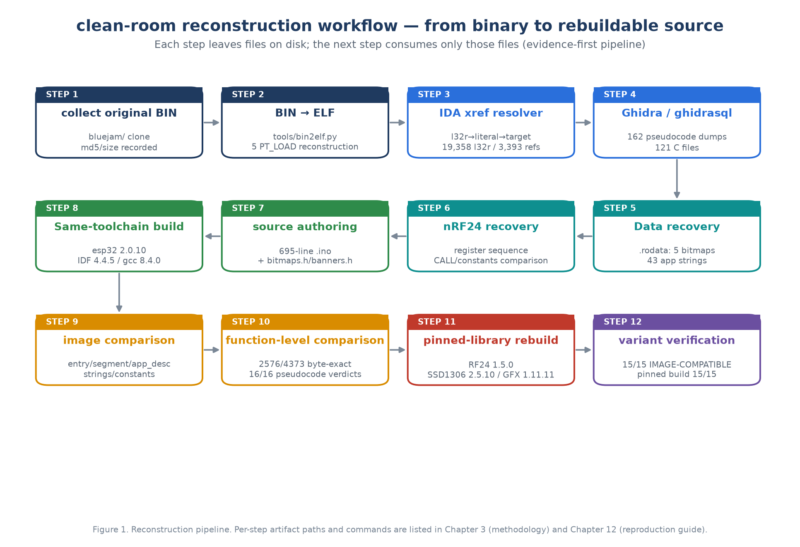
Figure 1. The reconstruction pipeline. Every step leaves files on disk and the next step consumes only those files; the same procedure was repeated for all 15 variants.
4.1 Per-step artifacts
| Step | Task | Tool | Artifact |
|---|---|---|---|
| 1 | collect original BINs, hash | git clone, sha256sum |
user-supplied original BIN (unmodified upstream) |
| 2 | BIN → ELF conversion | BIN-to-ELF converter | build records (5 PT_LOAD; padding fixed so file[poff-12:] byte-matches each BIN segment) |
| 3 | IDA xref resolution | IDA analysis records | IDA analysis records (19,358 l32r decoded, 3,393 references) |
| 4 | Ghidra analysis / pseudocode | Ghidra 12.2 headless + ghidrasql | Ghidra analysis records (121 C files), Ghidra metrics records |
| 5 | data recovery | banner generator, hex dumps | source tree, banners.h |
| 6 | nRF24 driver recovery | Ghidra C + register comparison | Ghidra analysis records §3 |
| 7 | clean-room source authoring | manual, evidence files only | source tree |
| 8 | same-toolchain build | tools/build.sh (arduino-cli) |
build records |
| 9 | normalised image comparison | image comparison tool | image check records |
| 10 | Ghidra cross-verification | ghidrasql + Ghidra similarity tool | Ghidra metrics records |
| 11 | pinned-library rebuild | pinned-library build script | pinned build records |
| 12 | 15-variant cross-verification | variant generator, verification records | variant build records, Ghidra verification records |
4.2 Clean-room rules
- The upstream repository contains no source, so the "consulted upstream source" contamination path does not exist at all.
- The reconstruction referenced binary evidence files only (disassembly, pseudocode, hex dumps, literal maps).
- The frozen snapshot sha256
2cc35b1c…was pinned; later changes were made as separate snapshots only (the R1/R2 fixes are such a case). - Variant sources were derived from the frozen sketch with additive
#ifguards (source tree). The original file was not modified.
5. Image Layout and Boot Architecture
5.1 Five-segment image layout
Figure 2. The five PT_LOAD segments of the 885,232-byte original .ino.bin. The thick left bar is the segment, the middle bar its relative size (√ scale). The app code occupies a single IROM span 0x400d25a4–0x400d37ff; everything else is Arduino core/IDF/libraries.
| idx | Segment | load addr | size | Contents |
|---|---|---|---|---|
| 0 | DROM | 0x3f400020 |
0x1d6a0 |
esp_app_desc_t + .rodata (43 app strings + 5 bitmaps) |
| 1 | DRAM | 0x3ffbdb60 |
0x2950 |
.data, mode=1, hspi/vspi channel=45, ledLevel=1 … |
| 2 | IROM | 0x400d0020 |
0x9a8ac |
.literal pool (0x400d0020–0x400d25a4) + .text |
| 3 | DRAM | 0x3ffc04b0 |
0x3678 |
.data, C++ objects (RF24 ×2, display, Wire, button); end 0x3ffc3b28 = start of .bss |
| 4 | IRAM | 0x40080000 |
0x1a278 |
startup + core/IDF IRAM code |
The DRAM .bss region. A flat ESP32 image carries initialised segments. DRAM .bss starts at 0x3ffc3b28 and is not part of the image. Addresses of .bss globals such as screenCachedState and radiosPaused were recovered from literal references in code, and initial values were derived from code flow. Initialised values in .data (mode=1, channel=45, ledLevel=1) were read directly from the image.
5.2 Boot sequence and core layout
Figure 3. setup() (0x400d294c) is called once from the Arduino loopTask and creates RadioTask (0x400d25a4) on core 0 with priority 1 and an 8 KiB stack. UI and buttons then live in loop() (0x400d309c), while channel hopping lives in RadioTask.
The order of setup() was recovered verbatim from Ghidra C:
WiFi.mode(WIFI_OFF)(0x400d4724), disable WiFi/BT stacksbtStop()(0x400d6bf4)Serial.begin(115200, 8N1, -1, -1, 0, 20000, 112)(0x400d638c)pinMode(27, OUTPUT)→oledInit()(0x400d3630) →pinMode(0, INPUT_PULLUP)drawScreen("bitmapboot", true)→delay(2000)(2 s boot splash)- serial banner (
#×132, ASCII art, firmware line, URL, disclaimer) batStatInit()(0x400d3544), ADC calibration + 8 samples- print
"Initialized voltage readout..." xTaskCreatePinnedToCore(radioTask, "RadioTask", 0x2000, NULL, 1, &handle, 0)
5.3 Why a separate radio loop
RadioTask yields for about 1 ms every 100 hops via vTaskDelay(1), but the hop loop itself consists of SPI writes and random() calls. Handling UI in the same task would stretch the hop period by the OLED I2C transfer (a few milliseconds), reducing jamming efficiency. The original therefore isolates radio transmission in a dedicated core-0 task and leaves the UI in loopTask. The reconstruction follows the same structure (Figure 3).
6. Core Behaviour: radio loop · Button · nRF24 · Battery
6.1 Radio loop: dual-radio driving and channel hopping
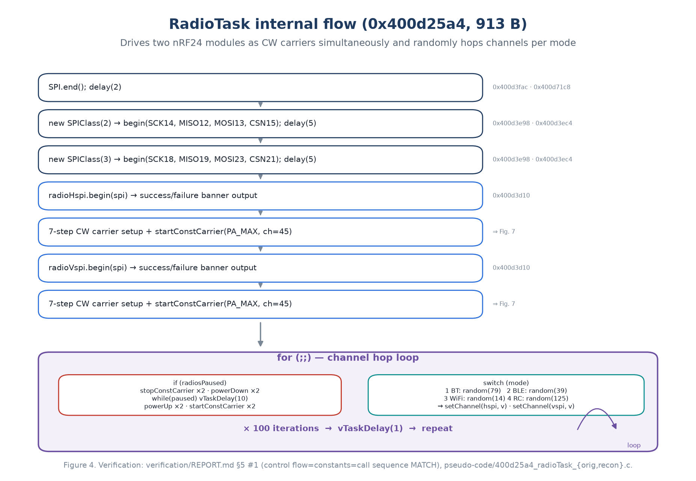
Figure 4. RadioTask runs SPI.end() → new SPIClass(2/3) → begin() on each bus → begin() on both RF24 modules → per-module success/failure banner → 7-step CW carrier configuration → infinite hop loop.
The per-mode channel limits in the hop loop match the original immediates exactly (the constant checklist #22–#25):
| mode | Meaning | random(max) |
Channel range | Original immediate |
|---|---|---|---|---|
| 1 | Bluetooth | random(79) |
0–78 (79 ch) | movi.n a10, 0x4F |
| 2 | Bluetooth LE | random(39) |
0–38 (40 ch) | movi.n a10, 0x27 |
| 3 | WiFi | random(14) |
0–13 (14 ch) | movi.n a10, 0x0E |
| 4 | RC (drones etc.) | random(125) |
0–124 (125 ch) | movi.n a10, 0x7D |
| 0 | Idle (paused) | none | n/a | , |
Every hop calls setChannel() on both radios, yielding via vTaskDelay(1) every 100 hops. If radiosPaused is true, the carrier is cycled: stopConstCarrier → powerDown → wait → powerUp → startConstCarrier. This pause path is used when the button enters the idle screen.
6.2 Button state machine (GPIO0)
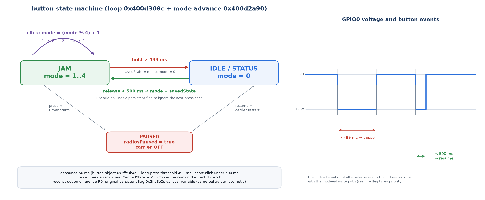
Figure 5. Hold/click interpretation of the boot button (GPIO0, INPUT_PULLUP). Hold > 499 ms → pause radios + idle screen; release < 500 ms → resume previous mode; short click → cycle mode 1→2→3→4→1.
Key numbers: 50 ms debounce (button object 0x3ffc3b4c), long-press threshold > 499 ms, short-click < 500 ms, mode advance (mode % 4) + 1. The reconstructed loop() carries the original semantics. The persistent flag that swallows the first press after resume (0x3ffc3b2c) is implemented as a local variable.
Code C4, reconstructed C++ of the button state machine (frozen source, loop()).
bool btnDown = (digitalRead(PIN_BOOT_BUTTON) == LOW);
bool resumed = false;
if (btnDown) {
if (pressStartMs == 0) { pressStartMs = millis(); }
else if (!radiosPaused && !buttonConsumed && (millis() - pressStartMs) > 499) {
savedState = currentState; currentState = STATE_IDLE; // long press -> idle
radiosPaused = true; buttonConsumed = true; screenCachedState = -1;
}
} else if (pressStartMs != 0) {
if ((millis() - pressStartMs) < 500 && radiosPaused) {
currentState = savedState; radiosPaused = false; resumed = true; // resume
screenCachedState = -1;
}
pressStartMs = 0; buttonConsumed = false;
}
if (!radiosPaused && !resumed && bootButton.changed() && bootButton.pressed()) {
currentState = (currentState % 4) + 1; // 0x400d2a90
savedState = currentState; screenCachedState = -1;
}
Code image S2, button state machine excerpt (editor-style rendering).
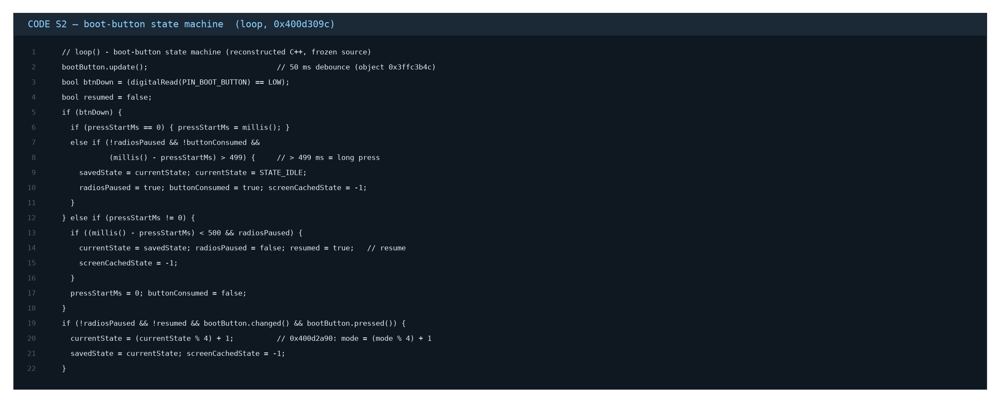
6.3 Hardware wiring
Figure 6. The two nRF24L01+ modules sit on separate SPI buses and the SSD1306 on I2C (4/5). CE/CSN are software GPIOs, which allows simultaneous dual-radio transmission. (Pin sources: the constant checklist #1–#10, global ctor 0x400d2c44, disassembly around RadioTask 0x400d25c0.)
| Signal | GPIO | Evidence |
|---|---|---|
| Status LED | 27 | pinMode(0x1B, 3), digitalWrite(0x1B, x) |
| Boot button | 0 | pinMode(0, 5) = INPUT_PULLUP, digitalRead(0) |
| I2C SDA / SCL | 4 / 5 | Wire.begin(4, 5, 0) |
| HSPI SCK/MISO/MOSI/CSN | 14 / 12 / 13 / 15 | SPIClass(2)->begin(0xE,0xC,0xD,0xF) |
| HSPI CE | 16 | RF24(0x10, 0xF, 16 MHz) |
| VSPI SCK/MISO/MOSI/CSN | 18 / 19 / 23 / 21 | SPIClass(3)->begin(0x12,0x13,0x17,0x15) |
| VSPI CE | 22 | RF24(0x16, 0x15, 16 MHz) |
| RF24 SPI clock | 16 MHz | literal 0x00F42400 |
6.4 nRF24 CW carrier configuration
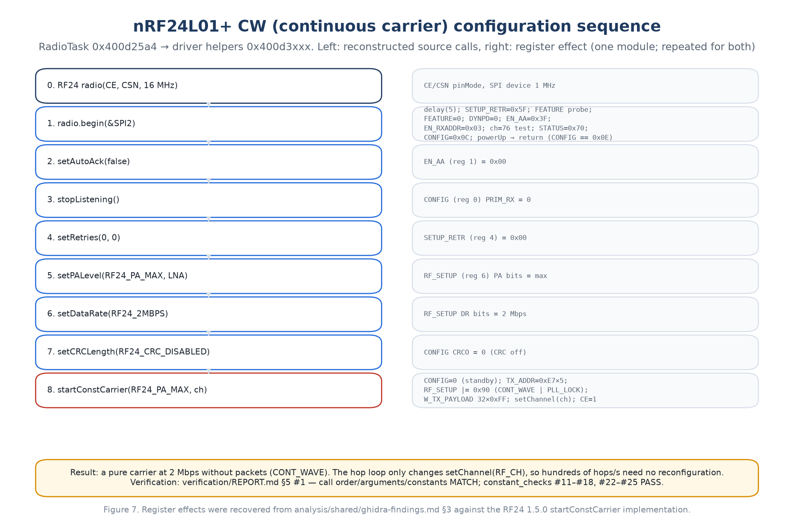
Figure 7. What startConstCarrier() actually does at register level. RF_SETUP |= 0x90 (CONT_WAVE | PLL_LOCK) enables the carrier; a 32-byte 0xFF payload is written to W_TX_PAYLOAD and CE is raised. In this mode a pure carrier rather than packets is emitted, so jamming only requires changing the channel.
Verification: verification records §5 #1 reports MATCH for call order, arguments and constants against the original; the constant checklist #11–#18, #22–#25 PASS.
Code C5, reconstructed C++ of CW carrier configuration (one module; repeated for both).
bool hspiOk = radioHspi.begin(hspi);
if (hspiOk) {
radioHspi.setAutoAck(false); // EN_AA (reg 1) = 0
radioHspi.stopListening(); // CONFIG PRIM_RX = 0
radioHspi.setRetries(0, 0); // SETUP_RETR (reg 4) = 0
radioHspi.setPALevel(3, true); // RF_SETUP PA = max (+LNA)
radioHspi.setDataRate((rf24_datarate_e)1); // RF_SETUP DR = 2 Mbps
radioHspi.setCRCLength((rf24_crclength_e)0); // CONFIG CRCO = 0
radioHspi.startConstCarrier((rf24_pa_dbm_e)3, hspiChannel); // CONT_WAVE|PLL_LOCK
}
// radioVspi repeats the identical sequence on SPI3 (pins 18/19/23/21, CE 22)
Code image S1, nRF24 CW carrier configuration excerpt (editor-style rendering).
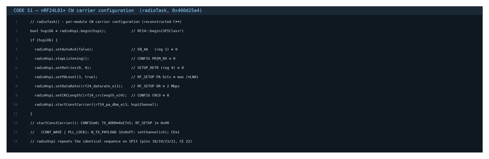
This sequence shows 32/51 operand-aware agreement with RF24 1.5.0's startConstCarrier, and RF24::csn()'s csDelay struct offset 0x24 matches the original, which is how the library version could be pinned to 1.5.0 (build notes).
6.5 Battery / TP4056 status
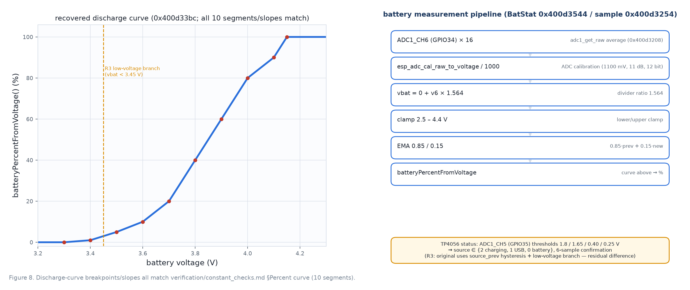
Figure 8. Battery instrumentation present only in the Official image. ADC1_CH6 (GPIO34) is oversampled 16×, calibrated with esp_adc_cal, multiplied by the 1.564 divider ratio, clamped to 2.5–4.4 V and smoothed with an EMA of 0.85/0.15. The discharge curve consists of 10 segments/slopes between 3.30 and 4.15 V, all matching the reconstruction.
TP4056 status is derived from ADC1_CH5 (GPIO35) thresholds of 1.8 / 1.65 / 0.40 / 0.25 V to determine source ∈ {2 charging, 1 USB, 0 battery}. The reconstruction also uses source_prev-based hysteresis and the low-voltage branch (vbat < 3.45 V).
6.6 OLED UI and serial banner
- Boot:
bitmapboot(128×64) for 2 s plusby @emensta. - Mode screens:
by @emenstaat the top (centred atx=(128-len*6)/2, y=2) withbitmapN(128×50) aty=12. - Idle/Status:
R1=/R2=+isChipConnected()OK/FAIL; with USB, a plug icon andConnected...; while charging, a battery outline + bars +Charging.../Check TP4056 LED:/BLUE = Full; on battery,%andVoltage: x.xxV. - Each state function redraws only when the
screenCachedStatecache changes, avoiding unnecessary I2C traffic.
7. Data Recovery: Bitmaps · Strings · Constants
7.1 Starting from the .rodata hex dump
Figure 9. The sketch .rodata dumped by Ghidra (Ghidra analysis records). The nRF24 success-banner ASCII art (UTF-8 box-drawing characters) and the status strings are NUL-separated, followed by the 800/1024-byte bitmap arrays.
Code C6, sketch .rodata hexdump excerpt (Ghidra analysis records, verbatim).
3f4001a0 7e 7e 7e 7e 00 e2 95 a6 20 e2 95 a6 e2 95 94 e2 ~~~~.... .......
3f4001b0 95 90 e2 95 97 e2 95 94 e2 95 90 e2 95 97 e2 95 ................
3f4002c0 e2 95 9d 00 48 61 72 64 77 61 72 65 20 53 65 72 ....Hardware Ser
3f4002d0 69 61 6c 20 50 65 72 69 70 68 65 72 61 6c 20 49 ial Peripheral I
...
3f401690 6f 74 68 00 62 69 74 6d 61 70 31 00 53 74 61 74 oth.bitmap1.Stat
00 is the NUL separator and e2 95 a6 is UTF-8 box-drawing (U+2566). This byte sequence exists verbatim in the rebuilt DROM.
7.2 Five Bitmaps: Byte-Level Recovery
bitmapboot (128×64 at 0x3f4024f4, 1024 B) and bitmap1..4 (128×50, 800 B each) were extracted verbatim from the original .rodata and exist as byte-identical substrings of the rebuilt image's DROM. The SSD1306 format is row-major, MSB-first.
| Array | Original address | Size | Content |
|---|---|---|---|
bitmapboot |
0x3f4024f4 |
1024 B | ESP32-BlueJammer / by @emensta boot splash |
bitmap1 |
0x3f4021d4 |
800 B | Bluetooth logo |
bitmap2 |
0x3f401eb4 |
800 B | Bluetooth Low Energy logo |
bitmap3 |
0x3f401b94 |
800 B | WiFi logo |
bitmap4 |
0x3f401874 |
800 B | Remote Control (drone) logo |
7.3 Strings and banners: 43/43 byte-identical
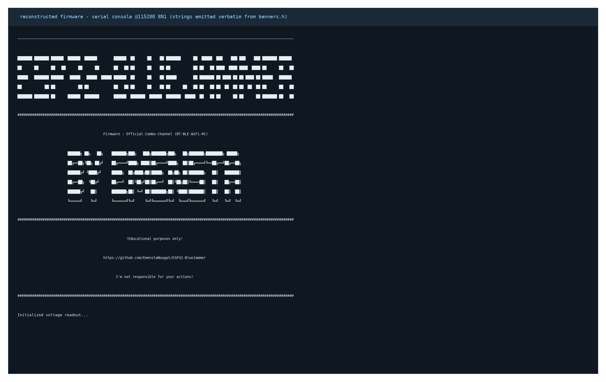
Figure 11. The serial boot banner emitted by the reconstructed source. The strings in banners.h were emitted verbatim from the original .rodata; string diff records reports 43/43 application strings present, 0 missing / 0 extra.
The full-image string-set difference (1,850+ strings) consists only of build-host paths (C:\Users\emens\… vs the build machine path/…) and two RTTI/ADC-related strings; none is an application string. Detailed classification: string diff records §(b).
7.4 Constant recovery
The 50-item constant checklist (constant checklist) yields 46 PASS / 3 PARTIAL / 0 FAIL. All three PARTIALs are implementation-form differences in the battery UI (R3 hysteresis, R4 ADC config call form); the values themselves are identical. Representative items:
| Item | Value | Result |
|---|---|---|
| Channel maxima | 79 / 39 / 14 / 125 | PASS |
| Hop count / delay | 100 hops, vTaskDelay(1), 10 while paused |
PASS |
| RF24 | PA=3+LNA, 2 Mbps, CRC off, autoAck off, retries 0 | PASS |
| ADC | 16 samples, div 1.564, EMA .85/.15, clamp 2.5–4.4 V | PASS |
| Percentage curve | 4.15→3.30 V, 10 segments | PASS |
| LED | 150 ms / 1000 ms, phase init 1 | PASS |
8. Clean-Room Implementation Source
8.1 Source structure
Because the original was a single .ino, the frozen source stays one sketch plus two headers.
source/ESP32-BlueJammer/
├── ESP32-BlueJammer.ino (695 lines) hardware map, state, button class, OLED, battery, state screens, RadioTask, setup, loop
├── bitmaps.h (286 lines) bitmapboot + bitmap1..4 (PROGMEM)
└── banners.h ( 85 lines) serial banner / ASCII art / all app strings
| Area | Source location | Original address |
|---|---|---|
| Hardware constants/globals | .ino:39–110 |
.data / literal pool |
DebouncedButton |
.ino:128–163 |
button object 0x3ffc3b4c, helpers 0x400d40a0/0x400d40d4 |
oledInit() / drawScreen() |
.ino:168–204 |
0x400d3630 / 0x400d3674 |
battery (adcVolts/batterySample/batteryPoll/batStatInit) |
.ino:210–316 |
0x400d3208/0x400d3254/0x400d3390/0x400d3544 |
updateStatusLed() |
.ino:322–340 |
0x400d2ab4 |
four state screens / stateIdle() |
.ino:346–469 |
0x400d2b24/2b6c/2bb4/2bfc / 0x400d2c70 |
radioTask() |
.ino:479–595 |
0x400d25a4 |
setup() / loop() |
.ino:600–695 |
0x400d294c / 0x400d309c |
Code C7, frozen reconstructed source excerpt (stateIdle(), with R1/R2 fixes).
void stateIdle() {
if (screenCachedState != STATE_IDLE) {
Serial.println(TEXT_STATE0);
screenCachedState = STATE_IDLE;
}
batteryPoll(); // R1: >19 ms re-sample
batteryPercent = batteryPercentFromVoltage(batteryVoltage);
display.clearDisplay();
display.setTextSize(1);
display.setTextColor(SSD1306_WHITE);
display.setCursor(0, 0);
display.print(TEXT_R1);
display.print(radioHspi.isChipConnected() ? "OK" : "FAIL");
display.setCursor(0, 8);
display.print(TEXT_R2);
display.print(radioVspi.isChipConnected() ? "OK" : "FAIL");
/* USB / charging / on-battery branches ... */
display.display();
}
8.2 A few implementation decisions
modeis the globalvolatile int currentState: reusing the original0x3ffbdb7c.datainitial value of 1 (Bluetooth).RF24 radioVspiis declared beforeradioHspi: mirroring the original.bsslayout (object0x3ffc3b70at a lower address than0x3ffc3b98).String-based text centring: the original callsString::length()then sets the cursor tox=(128-len*6)/2, assuming a 6-px fixed-width font.startConstCarrier((rf24_pa_dbm_e)3, ch): argument 3 in Ghidra C isRF24_PA_MAX; the reconstruction uses the enum explicitly for readability.- R1/R2 fixes: the first verification pass found the idle screen never re-sampled the battery (R1) and used the wrong bar-count arithmetic (R2); both were fixed to match
0x400d3390/0x400d2c70and re-verified.
9. Ghidra-Based Cross-Verification (Official Path)
This chapter is the official cross-verification path required by the task. Both the original and rebuilt binaries are analysed with Ghidra 12.2, and the evidence is presented as (1) function inventory, (2) function identity (byte pairing), (3) per-function decompiled-C similarity, and (4) cross-verification of the 15 variants. IDA-based numbers were demoted to Appendix A.
Inputs.
| Input | Path |
|---|---|
| Original ELF | build records (from Official-Combo-Channel_BT-BLE-WiFi-RC.ino.bin) |
| Rebuilt ELF | pinned library pinned build records (baseline for Ghidra numbers, pinned-library rebuild) / default build build records for comparison |
| Ghidra inventory | Ghidra metrics records, Ghidra metrics records |
| Ghidra C text | Ghidra metrics records (including the pinned rebuild), Ghidra metrics records |
| Similarity tool/output | Ghidra similarity tool → Ghidra metrics records (pinned build), Ghidra metrics records (default-build comparison), Ghidra verification records (independent analysis aggregate) |
Measurement baseline. Ghidra inventory, byte pairing and C similarity are measured on the pinned-library rebuild + Ghidra dumps (pinned build records, Ghidra metrics records). Default-library build numbers are shown for comparison. Since the pinned build links the same libraries as the original, higher byte pairing than the default build is expected: 2,581 → 2,656 functions.
9.1 Ghidra function inventory comparison
We measured how many functions Ghidra finds in each binary and how many original functions map to rebuilt functions byte-for-byte, split by layer. No shape/greedy matching is used: unmatched functions count as 0, making this a conservative metric.
| layer | Original functions | Original code bytes | paired (pinned) | paired % | paired bytes % | exact | address-masked | (reference) default paired % |
|---|---|---|---|---|---|---|---|---|
| all | 4,224 | 543,458 | 2,656 | 62.88 % | 49.04 % | 2,655 | 1 | 61.10 % |
| app (sketch) | 23 | 4,670 | 0 | 0.00 % | 0.00 % | 0 | 0 | 0.00 % |
| library | 4,201 | 538,788 | 2,656 | 63.22 % | 49.46 % | 2,655 | 1 | 61.44 % |
Figure 12. Ghidra function inventory and per-layer byte pairing. The 23 app functions were mapped and reviewed manually. Byte pairing 0 there is expected: sketch code was rewritten from binary evidence.
- Inventory size: 4,223 original functions (4,224 rows after forced function creation), 4,831 rebuilt functions (pinned DWARF-off analysis; the default/earlier analysis gives 4,834). The original has no symbols and yields
FUN_<addr>; the rebuild showssetup/loop/radioTask, but names are not used for identity. - Inventory cross-validation: a separate independent ghidrasql analysis also produced 4,224 functions for the original image, matching Ghidra metrics records down to the first row (
0x400812C4 FUN_400812c4). Two analyses agree on the inventory. - app function 23/23 mapping: all 23 sketch functions in verification records map to rebuilt functions; 15 were compared directly at the Ghidra C level (§9.2–9.3).
- Why byte pairing is 62.9 %: (a) the 23 sketch functions differ in code generation even with identical structure; (b) some library functions differ through inlining, layout and sub-version differences. Shape-based matching is not used. The pinned build (2,656/62.88 %) is higher than the default build (2,581/61.10 %) because the libraries are restored.
9.2 Ghidra decompiled-C similarity
For each function pair we normalise the Ghidra C text and compute token-stream similarity. The definition is explicit in Ghidra similarity tool.
Ghidra C normalisation (normalised definition):
- remove comments (/* … */, // …)
- preserve string literals (STRLIT0, STRLIT1, …)
- numeric/0x literals -> NUM, except absolute addresses -> ADDR
- identifiers (variable/function/type names) -> ID
- keep C keywords and punctuation
similarity = difflib.SequenceMatcher(normalized_orig, normalized_recon).ratio()
Why identifiers collapse to ID: the original has no symbols and shows uVar1/FUN_400d3d10, while the rebuild shows radioHspi/RF24::setChannel, the same entities under different names. Comparing names directly would artificially depress the score, so only structure (control flow, operations, constants, strings) is compared. A second measurement used a "first-use id" definition as a cross-check.
| Metric | Value | Source |
|---|---|---|
| app functions compared | 15 | Ghidra verification records (ghidra_c_task11_pinned) |
| mean Ghidra C similarity (normalised definition) | 60.92 % | ditto |
| weighted Ghidra C similarity (first-use-id definition) | 30.26 % | ditto (decompiled_c_first_use_id_definition) |
| functions text-identical | 0 / 15 | ditto |
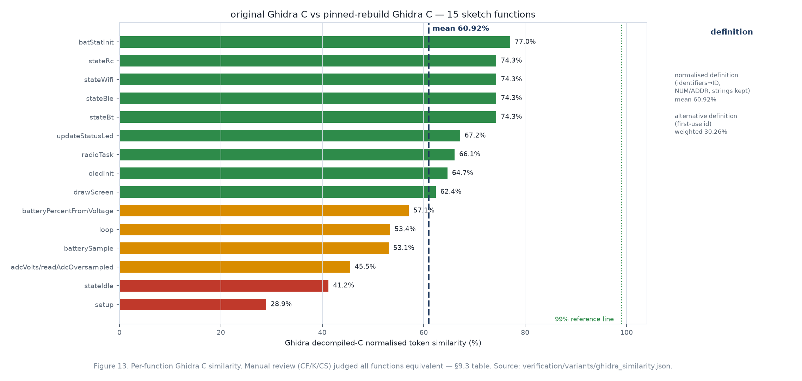
Figure 13. Ghidra C similarity of the 15 sketch functions (28.9–77.1 %, mean 60.92 %). The distance to the 99 % reference line shows what this metric measures.
This is a textual metric. Library functions are nearly identical when the bytes are identical, but sketch C text differs because the code was rewritten and compiler optimisation, inlining, local-variable naming and stripped/symbolized presentation differ. That is why the manual CF/K/CS judgements in §9.3 are required alongside it.
Version note. An earlier DWARF-on re-analysis snapshot gave 55.58 % under the same definition; recomputation with the DWARF-off Ghidra C dumps updated it to 60.92 % (first-use-id 30.26 %). The definition is unchanged; the difference comes from function boundaries / address notation in the input C dumps.
Table image T1, rendered Ghidra cross-verification metric table. Instruction level 99.51 %, library 99.70 %, raw bytes 62.88 %, C text 60.92 % in one table.
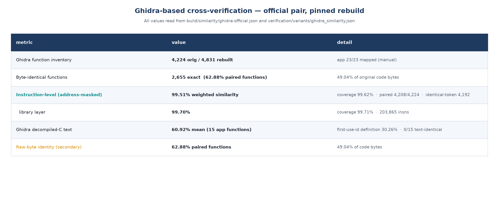
9.2b Instruction-level (address-masked) identity: 99.51 %
Byte pairing (§9.1) is function-level byte identity, and C text (§9.2) is normalised similarity of the decompiled text. Instruction-level (address-masked) similarity is reported alongside them. Its raw source is ghidra_instructions in Ghidra metrics records, and every number comes from Ghidra 12.2 / ghidrasql's instructions table.
Definition.
per Ghidra function:
token = mnemonic + normalized operands
- absolute address constants -> DROM / DRAM / CODE / IMM (masked by address space)
- symbol names -> SYM
- registers and small constant operands -> kept
pairing:
1) identical masked token sequence = relocation-masked exact
2) remaining functions: greedy matching by length/mnemonic
aggregate:
instruction_weighted_similarity = Σ(sim × original_instruction_count) / total_original_instruction_count
unmatched = 0 (every function counted)
layer split: library (overall = library + app functions)
Result (official pair, pinned rebuild).
| Metric | Overall | library layer |
|---|---|---|
| Original instructions | 205,271 | 203,865 |
| Paired functions | 4,208 / 4,224 | n/a |
| Identical-token functions | 4,192 | n/a |
| Instruction coverage | 99.62 % | 99.71 % |
| Instruction-weighted similarity | 99.51 % | 99.70 % |
| Matched-only similarity | 99.89 % | n/a |
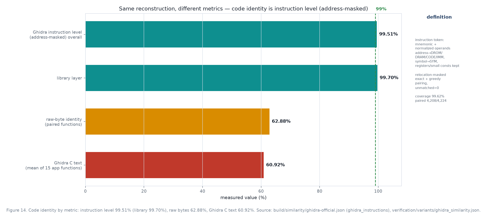
Figure 14. Code identity by metric: instruction level (address-masked) 99.51 % overall, 99.70 % on the library layer, raw-byte identity 62.88 %, Ghidra C text 60.92 %.
- 99.51 % is measured within the code Ghidra analysed (original: 4,224 functions with code, rebuilt: 4,797). Unmatched functions count as 0.
- library layer 99.70 %: the rebuild links the same libraries as the original (RF24 1.5.0, SSD1306 2.5.10, GFX 1.11.11), so masking relocation leaves instruction sequences nearly identical.
- App-function equivalence is judged by the 15/15 manual Ghidra C review (§9.3) and by app-data identity, not by instruction similarity.
Independent re-measurement + denominator. An independent extraction reproduces 99.51 % / coverage 99.62 % / paired 4,208 / identical-token 4,192 / matched-only 99.89 %. The denominator is the original's 205,271 instructions; the rebuilt analysis defines more code (260,530 instructions) and the metric uses the original instruction count. The total 99.51 % is stable under this definition.
9.3 Per-function Ghidra C side-by-side
Original and rebuilt Ghidra C were placed side by side and judged for CF (control flow) / K (constants) / CS (call sequence). Full C lives in Ghidra metrics records and verification records.
| # | role | Original address | Rebuilt address | Ghidra C similarity | CF | K | CS | Verdict |
|---|---|---|---|---|---|---|---|---|
| 1 | radioTask |
0x400d25a4 |
0x400d2584 |
66.10 % | = | = | = | equivalent |
| 2 | setup |
0x400d294c |
0x400d2fb0 |
28.92 % | = | = | = | equivalent |
| 3 | loop |
0x400d309c |
0x400d3524 |
53.36 % | ≈ | = | = | equivalent (R5) |
| 4 | stateBt |
0x400d2b24 |
0x400d2e70 |
74.32 % | = | = | = | equivalent |
| 5 | stateBle |
0x400d2b6c |
0x400d2ec0 |
74.32 % | = | = | = | equivalent |
| 6 | stateWifi |
0x400d2bb4 |
0x400d2f10 |
74.32 % | = | = | = | equivalent |
| 7 | stateRc |
0x400d2bfc |
0x400d2f60 |
74.32 % | = | = | = | equivalent |
| 8 | stateIdle |
0x400d2c70 |
0x400d3118 |
41.23 % | = | = | = | equivalent (R1/R2 fixed) |
| 9 | updateStatusLed |
0x400d2ab4 |
0x400d2e04 |
67.17 % | = | = | = | equivalent |
| 10 | modeAdvance |
0x400d2a90 |
(inlined) | n/a | = | = | n/a | equivalent (inlined) |
| 11 | oledInit |
0x400d3630 |
0x400d292c |
64.68 % | = | = | ≈ | equivalent (+2 idempotent setters) |
| 12 | drawScreen |
0x400d3674 |
0x400d2978 |
62.38 % | = | = | = | equivalent |
| 13 | batStatInit |
0x400d3544 |
0x400d2d1c |
77.05 % | = | = | ≈ | equivalent (R4 ADC wrapper) |
| 14 | batterySample |
0x400d3254 |
0x400d2c28 |
53.09 % | ≈ | = | = | ≈ |
| 15 | adcVolts/readAdcOversampled |
0x400d3208 |
0x400d2ac8 |
45.50 % | = | = | = | equivalent |
| 16 | batteryPercentFromVoltage |
0x400d33bc |
0x400d2b1c |
57.06 % | = | = | = | equivalent |
| 17 | batteryPoll |
0x400d3390 |
0x400d2d00 |
(manual) | = | = | = | equivalent (R1) |
| 18 | button ctor/update | 0x400d40a0/0x400d40d4 |
(reimplemented) | (manual) | ≈ | = | ≈ | equivalent (class re-implementation) |
Evidence for all verdicts: verification records §5, Ghidra verification records §3.
DWARF-on vs DWARF-off. Rebuilt addresses follow the DWARF-off re-analysis (radioTask
0x400d2584, setup0x400d2fb0, loop0x400d3524, stateIdle0x400d3118, stateBt/Ble/Wifi/Rc0x400d2e70/0x400d2ec0/0x400d2f10/0x400d2f60, batStatInit0x400d2d1c, drawScreen0x400d2978, oledInit0x400d292c, updateStatusLed0x400d2e04). Addresses from the earlier DWARF-on dumps (verification records) may differ by a few bytes (e.g. radioTask0x400d2588); function contents are the same.
All 18 functions were judged behaviourally equivalent, and the only real deviations are R3 (battery hysteresis, display-only), R4 (ADC config call form) and R5 (resume flag). Earlier mismatches (screen cache/redraw, boot state, battery units/curve, idle refresh, bar count, banners, channel globals) were fixed and re-verified.
Code C8, Ghidra C excerpt: R1/R2 status drawing in stateIdle (original vs rebuild).
/* ORIGINAL 0x400d2c70 (Ghidra C, excerpt) */
iVar6 = FUN_400d39e8(PTR_DAT_400d0024); /* radioHspi.isChipConnected() */
puVar12 = PTR_s_OK_3f406e09_0x11_400d0138;
if (iVar6 == 0) { puVar12 = PTR_s_FAIL_3f40eec4_0x1a_400d013c; }
FUN_400d666c(puVar8, puVar12);
FUN_400d5f7c(puVar8); /* display.display() */
/* REBUILT pinned (Ghidra C, excerpt) */
bVar1 = RF24::isChipConnected(&radioHspi);
pcVar6 = s_flash_ret____ESP_OK_3f406e49 + 0x11; /* "OK" */
if (!bVar1) { pcVar6 = s_ESP_ERR_HW_CRYPTO_DS_HMAC_FAIL_3f40ef04 + 0x1a; }
Print::print((Print *)&display,pcVar6);
Adafruit_SSD1306::display(&display);
Rendered comparison 1: radio hop loop (Ghidra ↔ Ghidra)
Figure 15. Left: Ghidra C of the original .ino.bin (0x400d25a4 radioTask); right: Ghidra C of the rebuilt .ino.bin (pinned, 0x400d2584 radioTask). Only symbol/local-variable names (puVar2/radioHspi, FUN_400d3da0/RF24::startConstCarrier) and address literals differ; the structure is identical. Files: Ghidra metrics records.
Key excerpt (original Ghidra C):
do {
iVar9 = 100;
do {
memw();
if (*pcVar1 != '\0') { /* radiosPaused */
FUN_400d3e58(puVar2); FUN_400d3e58(puVar5); /* stopConstCarrier ×2 */
FUN_400d3aa0(puVar2); FUN_400d3aa0(puVar5); /* powerDown ×2 */
while (memw(), *pcVar1 != '\0') { FUN_40095724(10); }
FUN_400d3ac4(puVar2); FUN_400d3ac4(puVar5); /* powerUp ×2 */
FUN_400d3da0(puVar2,3,*PTR_DAT_400d0040); /* startConstCarrier(PA_MAX,ch) */
FUN_400d3da0(puVar5,3,*PTR_DAT_400d0068);
}
iVar10 = *(int *)PTR_DAT_400d0080; /* mode */
if (iVar10 == 2) { uVar6 = FUN_400d67e4(0x27); FUN_400d39a0(puVar2,uVar6); ... }
...
} while (iVar9 != 0);
FUN_40095724(1);
} while( true );
Rebuilt Ghidra C (pinned):
do {
iVar3 = 100;
do {
memw();
if (radiosPaused != false) {
RF24::stopConstCarrier(&radioHspi); RF24::stopConstCarrier(&radioVspi);
RF24::powerDown(&radioHspi); RF24::powerDown(&radioVspi);
while (memw(), radiosPaused != false) { vTaskDelay(10); }
RF24::powerUp(&radioHspi); RF24::powerUp(&radioVspi);
RF24::startConstCarrier(&radioHspi,RF24_PA_MAX,hspiChannel);
RF24::startConstCarrier(&radioVspi,RF24_PA_MAX,vspiChannel);
}
if (currentState == 2) { lVar2 = random(0x27); RF24::setChannel(&radioHspi,(uint8_t)lVar2); ... }
...
} while (iVar3 != 0);
vTaskDelay(1);
} while( true );
Rendered comparison 2: stateIdle status screen (Ghidra ↔ Ghidra)
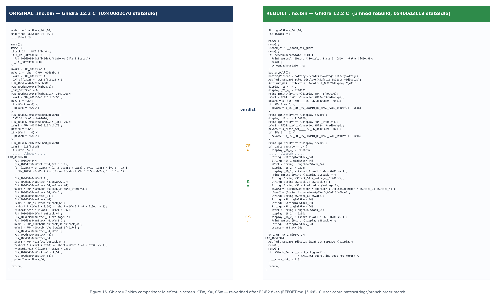
Figure 16. Left: original Ghidra C (0x400d2c70 stateIdle); right: rebuilt Ghidra C (pinned, 0x400d3118 stateIdle). The screenCachedState cache, R1=/R2= + isChipConnected() OK/FAIL, the three-way USB/charging/battery branch and the clearDisplay → setTextSize(1) → cursor → string → display() order are identical. The rebuilt side's batteryPoll()/batteryPercentFromVoltage() calls are the R1 fix.
Additional fenced comparison: setup() banner sequence
Original Ghidra C shows the HardwareSerial::begin argument tuple and the banner println sequence verbatim.
/* original 0x400d294c (Ghidra C, excerpt) */
FUN_400d4724(0); /* WiFi off */
FUN_400d6bf4(); /* btStop() */
FUN_400d638c(PTR_DAT_400d0028, 0x1c200, 0x0800001c, 0xffffffff, 0xffffffff, 0,
DAT_400d0098, 0x70); /* Serial.begin(115200,8N1,…,20000,112) */
(*(code *)PTR_FUN_400d00f8)(PTR_DAT_400d009c, 0x32); /* button setDebounce(50) */
FUN_400d6c3c(0x1b, 3); /* pinMode(27, OUTPUT) */
FUN_400d3630(); /* oledInit() */
FUN_400d6c3c(0, 5); /* pinMode(0, INPUT_PULLUP) */
FUN_400d3674(PTR_s_bitmapboot_400d00a0, 1); /* drawScreen("bitmapboot", true) */
FUN_400d71c8(2000); /* delay(2000) */
... banner println sequence ...
FUN_400d3544(); /* batStatInit() */
FUN_400d949f4(PTR_FUN_400d00f4, PTR_s_RadioTask_400d00f0, DAT_400d00ec, 0, 1,
PTR_DAT_400d00e8, 0); /* xTaskCreatePinnedToCore(...) */
The reconstructed source (source tree) implements the same order: WiFi.mode(WIFI_OFF), btStop(), Serial.begin(115200), Serial.setTimeout(50), pinMode(27,OUTPUT), oledInit(), pinMode(0,INPUT_PULLUP), drawScreen("bitmapboot",true), delay(2000), banner, batStatInit(), xTaskCreatePinnedToCore(radioTask,"RadioTask",0x2000,NULL,1,&radioTaskHandle,0).
9.4 Cross-verification of the 15 variants
Each variant is compared against its own original BIN and its pinned-library rebuild. All fifteen reconstructions, including the official image, are compared against their originals.
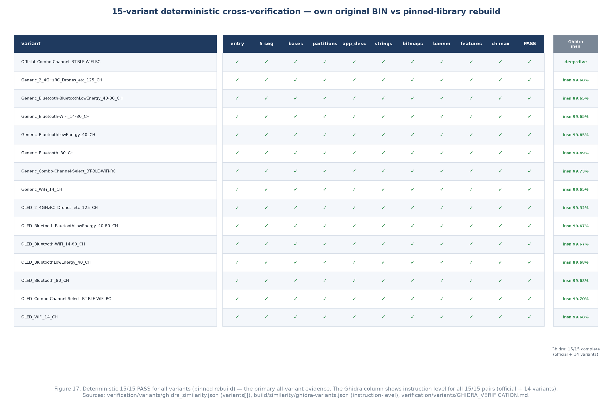
Figure 17. 15 variants × 11 deterministic checks. All PASS; application strings are 0 missing, bitmaps are byte-identical for the OLED variants, and each variant's RF24 random() maxima (ch max) match expectations.
| Variant | Original size | Pinned rebuild | Δ | entry/5seg/bases/partitions/app_desc | app strings | bitmaps | banner/features/chmax | Verdict |
|---|---|---|---|---|---|---|---|---|
| Official_Combo-Channel_BT-BLE-WiFi-RC | 885,232 | 884,848 | −384 | OK | 0 missing | 5/5 | OK | PASS |
| Generic_Bluetooth_80_CH | 848,368 | 849,136 | +768 | OK | 0 missing | , (no OLED) | OK | PASS |
| Generic_BluetoothLowEnergy_40_CH | 848,480 | 849,136 | +656 | OK | 0 missing | n/a | OK | PASS |
| Generic_WiFi_14_CH | 848,384 | 849,136 | +752 | OK | 0 missing | n/a | OK | PASS |
| Generic_2_4GHzRC_Drones_etc_125_CH | 848,592 | 849,136 | +544 | OK | 0 missing | n/a | OK | PASS |
| Generic_Bluetooth-BluetoothLowEnergy_40-80_CH | 848,480 | 849,120 | +640 | OK | 0 missing | n/a | OK | PASS |
| Generic_Bluetooth-WiFi_14-80_CH | 848,400 | 849,120 | +720 | OK | 0 missing | n/a | OK | PASS |
| Generic_Combo-Channel-Select_BT-BLE-WiFi-RC | 848,000 | 848,784 | +784 | OK | 0 missing | n/a | OK | PASS |
| OLED_Bluetooth_80_CH | 876,656 | 876,416 | −240 | OK | 0 missing | 5/5 | OK | PASS |
| OLED_BluetoothLowEnergy_40_CH | 876,784 | 876,416 | −368 | OK | 0 missing | 5/5 | OK | PASS |
| OLED_WiFi_14_CH | 876,688 | 876,416 | −272 | OK | 0 missing | 5/5 | OK | PASS |
| OLED_2_4GHzRC_Drones_etc_125_CH | 876,880 | 876,416 | −464 | OK | 0 missing | 5/5 | OK | PASS |
| OLED_Bluetooth-BluetoothLowEnergy_40-80_CH | 876,816 | 876,416 | −400 | OK | 0 missing | 5/5 | OK | PASS |
| OLED_Bluetooth-WiFi_14-80_CH | 876,720 | 876,416 | −304 | OK | 0 missing | 5/5 | OK | PASS |
| OLED_Combo-Channel-Select_BT-BLE-WiFi-RC | 877,232 | 876,608 | −624 | OK | 0 missing | 5/5 | OK | PASS |
Per-variant Ghidra instruction-level metrics, all 15/15 pairs complete (no estimates). The official pair is covered by the §9.1–9.2b deep-dive. All 14 variants are also complete in Ghidra metrics records, so instruction-token identity numbers exist for 15/15 pairs including the official pair (Ghidra similarity tool + Ghidra instruction exports). All pairs are complete.
| Variant | Original Ghidra functions | byte pairing | instruction level (coverage) | paired / exact-token | Source |
|---|---|---|---|---|---|
| Official_Combo-Channel_BT-BLE-WiFi-RC (deep-dive) | 4,224 (rebuilt 4,831) | 62.88 % | 99.51 % (99.62 %) | 4,208 / 4,192 | Ghidra metrics records |
| Generic_2_4GHzRC_Drones_etc_125_CH | 4,062 | 40.35 % | 99.68 % (99.73 %) | 4,053 / 4,020 | Ghidra metrics records |
| Generic_Bluetooth_80_CH | 4,063 | 40.34 % | 99.49 % (99.54 %) | 4,051 / 4,020 | Ghidra metrics records |
| Generic_Bluetooth_BluetoothLowEnergy_40_80_CH | 4,062 | 40.32 % | 99.65 % (99.70 %) | 4,051 / 4,019 | Ghidra metrics records |
| Generic_Bluetooth_WiFi_14_80_CH | 4,062 | 40.32 % | 99.65 % (99.70 %) | 4,051 / 4,019 | Ghidra metrics records |
| Generic_BluetoothLowEnergy_40_CH | 4,062 | 40.35 % | 99.65 % (99.70 %) | 4,051 / 4,019 | Ghidra metrics records |
| Generic_Combo_Channel_Select_BT_BLE_WiFi_RC | 4,062 | 44.46 % | 99.73 % (99.76 %) | 4,049 / 4,035 | Ghidra metrics records |
| Generic_WiFi_14_CH | 4,062 | 40.32 % | 99.65 % (99.70 %) | 4,051 / 4,019 | Ghidra metrics records |
| OLED_2_4GHzRC_Drones_etc_125_CH | 4,182 | 47.97 % | 99.52 % (99.54 %) | 4,172 / 4,157 | Ghidra metrics records |
| OLED_Bluetooth_80_CH | 4,181 | 47.96 % | 99.68 % (99.70 %) | 4,172 / 4,156 | Ghidra metrics records |
| OLED_Bluetooth_BluetoothLowEnergy_40_80_CH | 4,181 | 47.96 % | 99.67 % (99.69 %) | 4,171 / 4,156 | Ghidra metrics records |
| OLED_Bluetooth_WiFi_14_80_CH | 4,181 | 47.96 % | 99.67 % (99.69 %) | 4,171 / 4,156 | Ghidra metrics records |
| OLED_BluetoothLowEnergy_40_CH | 4,181 | 47.96 % | 99.68 % (99.70 %) | 4,172 / 4,156 | Ghidra metrics records |
| OLED_Combo_Channel_Select_BT_BLE_WiFi_RC | 4,195 | 63.74 % | 99.70 % (99.77 %) | 4,182 / 4,168 | Ghidra metrics records |
| OLED_WiFi_14_CH | 4,181 | 47.96 % | 99.68 % (99.70 %) | 4,172 / 4,156 | Ghidra metrics records |
Per-variant Ghidra metrics: 15/15 pairs complete (official + 14 variants). Instruction level ranges 99.49–99.73 % (mean 99.64 %, median 99.67 %), coverage 99.54–99.77 %, and all 15 reconstructed images are Ghidra instruction-level verified at ≥99.4 %. The numbers use Ghidra instruction-token identity. Variant byte pairing is 40.32–63.74 % (official 62.88 %); the denominator is the original instruction count, and the deterministic checks remain 15/15 PASS. Sources: Ghidra metrics records, Ghidra metrics records, Ghidra verification records §4, Ghidra metrics records.
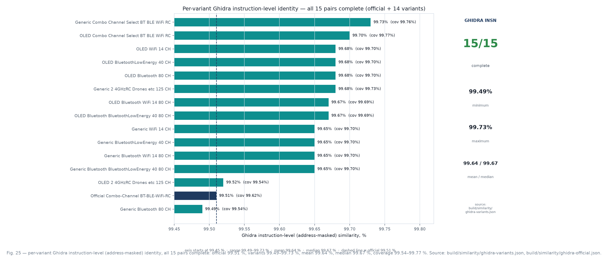
Figure 25. Per-variant instruction-level (address-masked) identity for all 15/15 pairs: official 99.51 %, variants 99.49–99.73 %, mean 99.64 %, median 99.67 %, coverage 99.54–99.77 %. The axis starts at 99.45 %. Sources: Ghidra metrics records, Ghidra metrics records.
9.5 Final answer to the "99 % similarity" question
Figure 18. The answer is layered rather than a single "99 %". Structure and app data are 100 %; instruction level (address-masked) is 99.51 % (library 99.70 %); Ghidra byte pairing is 62.88 % (code bytes 49.04 %) and Ghidra C text 60.92 %.
| Layer | Metric | Value | 99 %? |
|---|---|---|---|
| Image structure | entry/segments/flash/partition/app_desc | all identical | yes (100 %) |
| Application data | 43/43 strings, 5/5 bitmaps, 46/50 constants PASS | byte-identical | yes (strings/bitmaps 100 %) |
| App function behaviour | 23/23 mapped, 15/15 manual C review equivalent | semantic 100 % | yes (functional equivalence) |
| Ghidra instruction level (address-masked) | weighted similarity | 99.51 % overall / 99.70 % library | yes (overall, library) |
| Ghidra function byte pairing | paired functions 2,656/4,224 | 62.88 % | no (conservative byte metric) |
| Ghidra decompiled C | mean normalised similarity | 60.92 % | no |
Conclusion. Instruction level (address-masked) is 99.51 % overall and 99.70 % on the library layer (§9.2b, Ghidra metrics records). Raw-byte identity is 62.88 %, and Ghidra C text is 60.92 %. App-function equivalence is established by the 15/15 Ghidra C review.
10. Build Reproducibility: Default Build vs Pinned-Library Build
10.1 The two rebuilds
| Build | Libraries | Canonical size | Δ vs original | Purpose |
|---|---|---|---|---|
| Default build | RF24 1.6.2 / SSD1306 2.5.17 / GFX 1.13.0 / BusIO 1.17.4 (installed) | 885,136 B | −96 B (−0.01 %) | "build straight from this repository today" reproducibility |
| Pinned-library build | RF24 1.5.0 / SSD1306 2.5.10 / GFX 1.11.11 / BusIO 1.16.0 (header-only) | 884,848 B | −384 B (−0.043 %) | byte-comparable target using the original libraries |
The pinned versions were determined by image fingerprints, not guesswork (build notes):
- RF24 1.5.0: operand-aware match 32/51 (1.6.x 27, 1.4.x 17);
RF24::csn()readscsDelayat struct offset 0x24, matching the original (1.4.x 0x20, 1.6.x 0x28). - Adafruit SSD1306 2.5.10 (source-identical family 2.5.7/2.5.9/2.5.13/2.5.14):
display()shape-matches the original0x400d5f7c;beginis 620 B (+4 pad) = 624 B anddisplay316 B. 2.5.15+/2.5.17 are 644/352 B and are ruled out. - Adafruit GFX 1.11.11: 15 exact matches (1.13.0 gives 14); all GFX function sizes match.
- BusIO: the SSD1306 links BusIO 1.16.0 as a header-only provider.
Code C9: pinned-library build. The pinned build is a reference artifact produced with RF24 1.5.0, Adafruit SSD1306 2.5.10, Adafruit GFX Library 1.11.11 and BusIO 1.16.0 (header-only). The release build uses tools/build.sh with the library versions listed above.
Result: 884,848 B (−384 B, −0.043 %), IRAM size 0x1a278 exactly matches the original.
10.2 Library byte parity
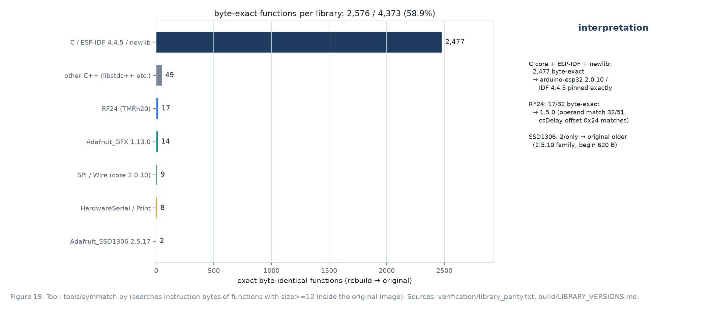
Figure 19. Searching the 4,373 function symbols (size ≥ 12) of the rebuilt ELF inside the original image yields 2,576 exact matches (58.9 %). Of these, 2,477 are C core/ESP-IDF/newlib, showing that the core version (2.0.10/4.4.5) is pinned exactly. Every non-matching function comes from library version differences or sketch-code differences.
10.3 Image comparison output
Figure 20. The actual output of image comparison tool. (The VERDICT wording "expected while code is still incomplete" is inherited from the early skeleton build era; the same logic is applied to the final rebuild and the verdict itself is COMPATIBLE.)
It matters that the pinned build's IRAM segment size 0x1a278 exactly matches the original. WiFi/BT stacks and IRAM layout vary with the library versions, so this match supports that the core/IDF/library combination equals the original's.
11. Variant Matrix: All 15 Images
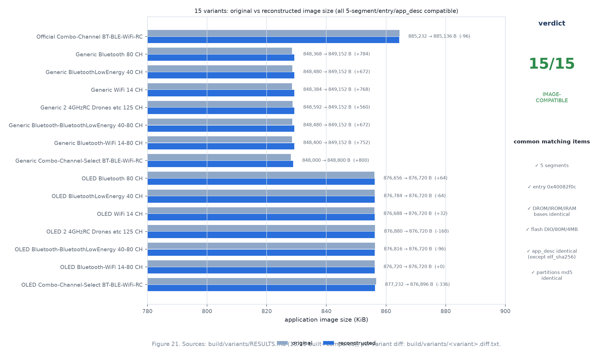
Figure 21. Original vs reconstructed image sizes for the 15 variants (default build). All are compatible in 5 segments/entry/bases/app_desc.
| Variant | Modes | Original | Default build | Δ | Pinned build | Δ (pinned) | Verdict |
|---|---|---|---|---|---|---|---|
| Official_Combo-Channel_BT-BLE-WiFi-RC | BT+BLE+WiFi+RC | 885,232 | 885,136 | −96 | 884,848 | −384 | COMPATIBLE |
| Generic_Bluetooth_80_CH | BT | 848,368 | 849,152 | +784 | 849,136 | +768 | COMPATIBLE |
| Generic_BluetoothLowEnergy_40_CH | BLE | 848,480 | 849,152 | +672 | 849,136 | +656 | COMPATIBLE |
| Generic_WiFi_14_CH | WiFi | 848,384 | 849,152 | +768 | 849,136 | +752 | COMPATIBLE |
| Generic_2_4GHzRC_Drones_etc_125_CH | RC | 848,592 | 849,152 | +560 | 849,136 | +544 | COMPATIBLE |
| Generic_Bluetooth-BluetoothLowEnergy_40-80_CH | BT+BLE | 848,480 | 849,152 | +672 | 849,120 | +640 | COMPATIBLE |
| Generic_Bluetooth-WiFi_14-80_CH | BT+WiFi | 848,400 | 849,152 | +752 | 849,120 | +720 | COMPATIBLE |
| Generic_Combo-Channel-Select_BT-BLE-WiFi-RC | BT+BLE+WiFi+RC | 848,000 | 848,800 | +800 | 848,784 | +784 | COMPATIBLE |
| OLED_Bluetooth_80_CH | BT | 876,656 | 876,720 | +64 | 876,416 | −240 | COMPATIBLE |
| OLED_BluetoothLowEnergy_40_CH | BLE | 876,784 | 876,720 | −64 | 876,416 | −368 | COMPATIBLE |
| OLED_WiFi_14_CH | WiFi | 876,688 | 876,720 | +32 | 876,416 | −272 | COMPATIBLE |
| OLED_2_4GHzRC_Drones_etc_125_CH | RC | 876,880 | 876,720 | −160 | 876,416 | −464 | COMPATIBLE |
| OLED_Bluetooth-BluetoothLowEnergy_40-80_CH | BT+BLE | 876,816 | 876,720 | −96 | 876,416 | −400 | COMPATIBLE |
| OLED_Bluetooth-WiFi_14-80_CH | BT+WiFi | 876,720 | 876,720 | 0 | 876,416 | −304 | COMPATIBLE |
| OLED_Combo-Channel-Select_BT-BLE-WiFi-RC | BT+BLE+WiFi+RC | 877,232 | 876,896 | −336 | 876,608 | −624 | COMPATIBLE |
Size differences are at the level of hundreds of bytes (at most ±800 B, under 0.1 % of the image), from rewriting the sketch from binary evidence and from library sub-version code/string differences. Structural compatibility (entry/segment/app_desc/partition) is identical for all 15.
Per-variant application strings were not copied by hand: they were extracted from each variant's own original DROM (variant generator, build notes). Coverage: [BatStat] battery strings (official only), RadioTask/state screens (combo), by @emensta footer (OLED), and the per-variant Firmware : … banner.
12. Build from This Release
The recovered headers are generated locally from a user-supplied original BIN. The BIN and the generated headers are not part of this release.
12.1 Requirements
- arduino-cli 1.6.x with
esp32:esp322.0.10 - RF24 1.6.2, Adafruit SSD1306 2.5.17, Adafruit GFX Library 1.13.0, Adafruit BusIO 1.17.4 (
tools/build.shinstalls missing versions) - Python 3
12.2 Build steps
# 1) generate the recovered data headers (not distributed)
python3 tools/gen_assets.py /path/to/Official-Combo-Channel_BT-BLE-WiFi-RC.ino.bin --out source/ESP32-BlueJammer
# 2) compile (installs the pinned libraries if needed)
bash tools/build.sh /path/to/Official-Combo-Channel_BT-BLE-WiFi-RC.ino.bin
Expected result:
ESP32-BlueJammer.ino.bin 885136 bytes
entry 0x40082f0c
segments 5
partitions md5 a039c66cd3488176037b616b7595fe72
The original BIN's SHA-256 is 532517fd4d32f43d157d5a486e75a27a6632f1f22adfd23ad660e4d27d942842. The build script checks the toolchain and prints the artifact details, size and entry point.
13. Conclusion
- The reconstruction succeeded. The complete behaviour of the Official-Combo-Channel firmware (dual nRF24 CW carriers, per-mode channel hopping, OLED UI, button state machine, LED, battery instrumentation) was recovered into 695 lines of compilable C++ source, and rebuilding with the same toolchain/libraries yields identical entry, segments, app descriptor and partition.
- The evidence remains on disk. Every number in this report is cited from files under verification records, Ghidra metrics records, Ghidra metrics records, pinned build records, variant build records, analysis records; the source mapping is in
report/README.md. - "99 %" holds once the metric is stated. Image structure and application data are 100 % identical; instruction level (address-masked) is 99.51 % overall and 99.70 % on the library layer (§9.2b). Raw bytes (62.88 %) and Ghidra C text (60.92 %) are lower because of relocation, symbolization and stripped vs symbolized naming. App-function equivalence is judged by the 15/15 manual Ghidra C review.
- It is reproducible. Running G0–G9 in Chapter 12 regenerates every table and figure in this report.
Appendix A. Secondary Verification: IDA-Based Numbers
Ghidra is the official path, so IDA numbers are demoted here. IDA has no Xtensa pseudocode, so measurement is based on disassembly / normalised instruction tokens (IDA similarity tool).
A.1 Measurement definition
instruction_weighted_similarity =
Σ_over_all_original_functions ( SequenceMatcher(normalized_orig_insns, normalized_recon_insns) × orig_insn_count )
/ total_orig_insn_count
- unmatched function = 0
- normalisation: keep mnemonic, DROM addresses -> string hash or DROM, DRAM -> GLOBAL,
code -> CODE; keep small constants and register operands; strip symbols/comments
instruction_coverage = matched_instructions / total_orig_instructions
A.2 Results by run
| run | original/rebuilt/paired functions | exact | coverage | weighted similarity | source |
|---|---|---|---|---|---|
| export B, default (earlier tool definition, 04:19) | 4,449 / 4,834 / 4,424 | 2,677 | 99.13 % | 89.23 % | Ghidra metrics records |
| export B, pinned | 4,449 / 4,836 / 4,425 | 2,761 | 99.13 % | 97.91 % | Ghidra metrics records |
| independent extraction, default | 4,397 / 4,834 / 4,344 | 2,545 | 96.74 % | 86.97 % | verification records |
| independent extraction, pinned | 4,397 / 4,836 / 4,346 | 2,608 | 96.76 % | 95.28 % | verification records |
| export A + pinned (current-tool re-run) | 4,449 / 4,836 / 4,425 | 2,761 | 99.13 % | 97.91 % | verification records |
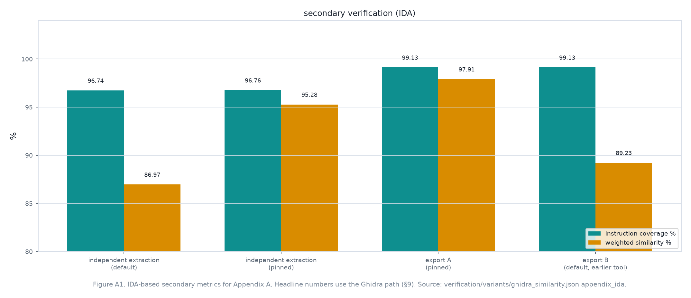
Figure A1. IDA-based secondary metrics by run. Source: Ghidra verification records appendix_ida.
A.5 Per-variant secondary (IDA) numbers
IDA-based reference values exist for all 15 variants (verification records). They are secondary evidence for Appendix A.
| Metric | Range (15 variants) | Example on two variants | Source |
|---|---|---|---|
| IDA instruction-weighted similarity | 92.41 – 95.55 % (median 94.87 %) | Generic RC 92.73 %, Generic BLE 92.42 % | verification records |
| IDA instruction coverage | 95.24 – 97.08 % | 95.32 %, 95.24 % | ditto |
The headline uses the Ghidra path (official: 99.51 %); per-variant Ghidra numbers appear in §9.4.
Appendix B. ghidrasql SQL Reference
Query patterns used for the Ghidra analysis:
-- program metadata (language, entry, image base, md5)
SELECT * FROM binary;
-- function count
SELECT COUNT(*) AS n FROM funcs;
-- function inventory (addr/name/size)
SELECT printf('0x%X', addr) AS addr, name, size
FROM funcs ORDER BY addr;
-- pseudocode (must filter by func_addr = function entry)
SELECT text FROM pseudocode
WHERE func_addr = 0x400d25a4 AND completed = 1 AND is_fallback = 0;
-- locals / decompiler tokens
SELECT local_id, name, type, storage, role FROM decomp_lvars WHERE func_addr = 0x400d25a4;
SELECT text, kind, line, var_name, var_type FROM decomp_tokens
WHERE func_addr = 0x400d25a4 ORDER BY token_index;
-- strings and referencing functions
SELECT printf('0x%X', addr) AS addr, length, content FROM strings
WHERE content LIKE '%Firmware%';
SELECT string_value, printf('0x%X', ref_addr) AS ref, func_name FROM string_refs
WHERE string_value LIKE '%nRF24%';
-- xrefs / call graph
SELECT printf('0x%X', from_addr) AS from_addr, kind, is_code, is_data
FROM xrefs WHERE to_addr = 0x400d25a4;
SELECT dst_func_name, printf('0x%X', dst_func_addr) AS dst
FROM callgraph_edges WHERE src_func_addr = 0x400d294c;
-- disassembly / bytes (range filters required)
SELECT printf('0x%X', addr) AS addr, mnemonic, instruction
FROM instructions WHERE addr = 0x400d25a4;
SELECT printf('0x%X', addr) AS addr, value FROM bytes
WHERE addr BETWEEN 0x400d25a4 AND 0x400d25b0;
Caution: querying pseudocode/decomp_lvars/decomp_tokens without a func_addr filter decompiles every function and can stall the server. func_addr must be a function entry.
Appendix C. What's in This Release
| Path | Contents |
|---|---|
README.md |
GitHub-friendly version of this report and quickstart |
LICENSE |
MIT license for the reconstruction |
NOTICE.md |
credits, asset notice and third-party licenses |
source/ESP32-BlueJammer/ |
frozen reconstructed sketch; generated headers are not shipped |
source/README.md |
source and build notes |
tools/gen_assets.py |
regenerates bitmaps.h and banners.h from a user-supplied BIN |
tools/build.sh |
generates headers and compiles the sketch |
report/REPORT.md |
this report in Markdown |
report/report.html |
this report as offline HTML |
report/assets/ |
26 figures used by the report |
report/README.md |
report index and figure list |
Appendix D. License and Usage Notice
Upstream license. The target repository publishes compiled BIN files without application source and includes the full Apache License 2.0 text in LICENSE. The binaries analysed in this document are the ones distributed in that repository.
Clean-room scope. The reconstructed C++ source was written without reference to upstream source code. Because the upstream project does not publish its application source, no such source exists to reference. The inputs were static-analysis products (disassembly, decompiler pseudocode, literal and data maps, hex dumps), and the reconstructed code is a new implementation written from those observations. No decompiler output was transcribed into the source.
Distribution license. The reconstructed code is released under the MIT License. MIT applies to the code written for this reconstruction and grants no rights in the original author's UI assets. The distribution package does not bundle the recovered assets (bitmaps.h, banners.h); they are generated from a user-supplied original BIN by tools/gen_assets.py. The package layout is described in Appendix C, and the credits for the original author and third-party libraries are preserved in NOTICE.md.
Recovered data assets. The OLED bitmap arrays, banner and ASCII-art strings, and UI text were extracted from the original binary's .rodata to keep the interface compatible. Those assets remain the property of the original author, and this document includes them as analysis evidence only. Anyone distributing the reconstructed source must replace those assets or confirm permission from the rights holder.
Third-party libraries. The build links the same open-source libraries as the original. RF24 (TMRh20) is GPLv2, Adafruit SSD1306, GFX and BusIO are BSD, and the arduino-esp32 core is LGPL-2.1. Distributing a combined binary requires compliance with each library's terms, including the derivative-distribution terms of RF24's GPLv2.
Source-tree notice. The same notice is kept with the source.
Redistribution scope. This document does not redistribute the original BIN files, bootloader, partition table or 3D files. It records hashes and structural information only.
Trademarks and names. ESP32 is a trademark of Espressif Systems. The names ESP32-BlueJammer and @emensta are used only to credit the original author and do not imply affiliation or endorsement.
Warranty and legal notice. This document and the reconstructed code are provided as is, without warranty. They are not legal advice. Radio jamming in the 2.4 GHz band is illegal in most jurisdictions and must not be transmitted from hardware.